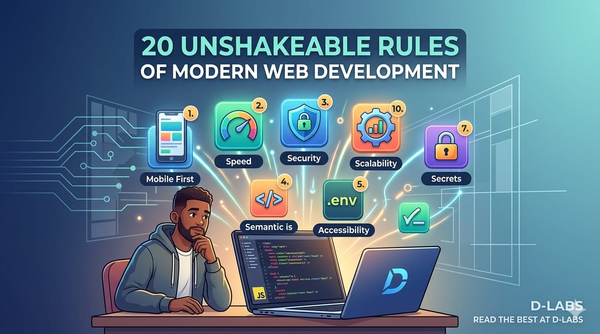

Here is the hard reality of web development: most beginners focus entirely on making a website look good. Strong developers, however, focus on making it usable, secure, fast, scalable, and maintainable.
If you want to build websites that survive the real world, these are the 20 essentials you must remember every single time you write a line of code.
1. Mobile-First is the Only Way
Most users today are on phones. If your layout breaks on mobile, your website is already failing. Always test on small screens, different browsers, touch interactions, and slow internet connections. Ask yourself: "Can someone comfortably use this with just one thumb?"
2. Speed Over Fancy Design
A beautiful but slow website loses users. Optimize your images, fonts, API calls, and JavaScript bundles. Compress your assets and lazy-load content. The rule is simple: Users leave slow websites silently.
3. Never Trust User Input
This is where many beginners get destroyed. Malicious users can send harmful code, break forms, spam APIs, or upload dangerous files. Always validate and sanitize input on both the frontend and backend, hash passwords, and protect your APIs. Security is never optional.
4. Good UI Does Not Equal Good UX
A site can look amazing and still be incredibly frustrating to use. Good User Experience (UX) means clear navigation, obvious buttons, simple forms, and fast feedback. Users should never have to stop and think, "Where do I click?"
5. Accessibility Matters
Your website should work for everyone, including keyboard users, screen readers, and the visually impaired. Use semantic HTML, add descriptive alt text to images, and ensure high color contrast. Bonus: Accessible sites rank much higher on Google.
6. Write Clean, Maintainable Code
Messy code becomes your future enemy. Write code with the mindset that the next developer maintaining it has a short temper and anger issues! Use clear variable names, reusable components, proper folder structures, and write comments only when absolutely necessary.
7. Guard Your Secrets
Never, under any circumstances, hardcode API keys, database URLs, or secret tokens into your main files. Use environment variables (.env) and keep your sensitive credentials on the backend. A leaked key can ruin your reputation and your bank account very fast.
8. Structure Your Site for SEO
Even the best websites become invisible without Search Engine Optimization. Use proper titles, meta descriptions, clean URLs, and structured semantic headings (<h1>, <h2>). Search engines need structure to understand what you built.
9. Code for Failure, Not Just Success
Beginners only code for the perfect path. Professionals code for the messy reality: network failures, empty data arrays, wrong passwords, API downtime, and invalid file uploads. Handle errors gracefully so users never see a raw error code or a frozen screen.
10. Think About Scalability Early
Even small projects need a solid foundation. Avoid building giant, messy files and repeating your logic everywhere. Before you write a feature, think: Can this scale? Can another developer understand this? Will I be able to maintain this after six months?
11. Version Control is Mandatory
Using Git properly is a non-negotiable habit. Make meaningful commit messages, utilize branches for new features, and push your code frequently to platforms like GitHub. Git is your ultimate safety net.
12. Test Everything (Assume Nothing)
Never launch a feature with the phrase, "Well, it should work." Test on different devices, test with real users, test edge cases, and test how your application behaves when the internet drops or data returns completely empty.
13. Set Up Logging and Monitoring
If something breaks in production, you need to know about it before your client calls you angry. Use console logging during development, and implement error-tracking platforms like Sentry and tools like Google Analytics once you go live.
14. Stop Overengineering
You don't need a complex architecture or 20 unnecessary libraries for a simple project. Features nobody asked for just create bugs nobody wants. Simple systems win. Start simple, and improve only when the data demands it.
15. User Data is a Serious Responsibility
If users trust you with their data, respect their privacy and protect it fiercely. Store only what is absolutely necessary for your application to run. One data breach can permanently destroy a brand's trust.
16. Master the Art of Deployment
A developer who cannot deploy is incomplete. You must understand environment variables, hosting platforms, custom domains, and HTTPS. Master modern deployment platforms like Vercel, Netlify, and Render to bring your code to the world.
17. Documentation Saves Lives
Always write clear setup instructions, API documentation, and brief overviews of your project structure. Your future self will completely forget how this code works in three months, so write it down today.
18. Consistency Beats Motivation
Many developers fail because they jump from framework to framework, chase trends, or quit the moment debugging gets tough. Elite developers build consistently, focus on finishing projects, and learn the core fundamentals deeply.
19. Learn Fundamentals Before Tools
Frameworks and libraries change constantly, but core fundamentals stay the same. Master HTML, CSS, vanilla JavaScript, Databases, HTTP requests, APIs, and Authentication. If your fundamentals are strong, you can learn any framework in a weekend.
20. Build Real Projects
Watching tutorials creates an illusion of competence. Building real things creates actual skill. Force yourself to build authentication systems, interactive dashboards, payment integrations, and custom APIs. That is where real learning starts.
The Golden Rule of D-LABS: Every time you sit down to code, ask yourself one final question: "Will this still work perfectly when real users start hitting the server?"
That single shift in perspective changes how you build everything.